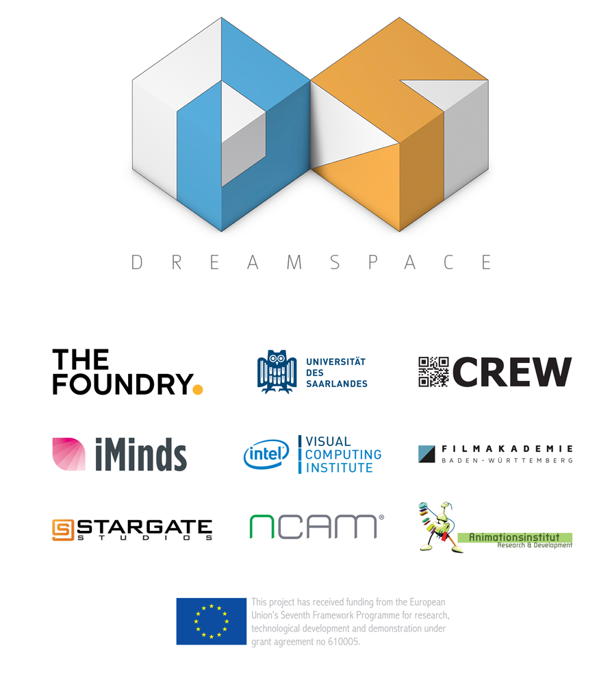

Project Dreamspace and related componentsProject DREAMSPACE is a three-year European Commission funded project that researches and develops tools that enable creative professionals to work collaboratively and combine live performances, video and computer-generated imagery in real-time.One part of the Dreamspace research focuses on developing prototypes for directors, designers and artists to build experiences directly from visual components, working together on set or in the performance space, and see the results immediately. The other is to research and develop ways of using Virtual Production technologies to deliver new creative experiences. DREAMSPACE is a research project that comprises some of the top entities from the education, research and commercial sections, including The Foundry, ncam, Stargate Germany, CreW, Saarland University, iMinds and Filmakademie Baden-Wuerttemberg. VPET is one of many components build during this project. It is build to interact with the central production prototype ‘Live View’ which is a research prototype from the Foundry combining the geometry pipeline of Katana and the image processing pipeline of Nuke. Multiple renderers are hosted in the system rendering the Katana authoured scene, including the distributed fast ray-tracer from the University of Saarlands (UdS). VPET is a tablet based set editing tool created in Unity which streams the virtual scene over WiFi from the Live View system and allow users to edit the virtual set and lighting, with changes reflected in the LiveView system immediately. Additionally a prototype light capture tool operated on a Google Tango tablet from UdS reconstructs the real world lighting conditions in the render of the virtual world. More information on project Dreamspace at the official website.
Project Partners |
|
|

|